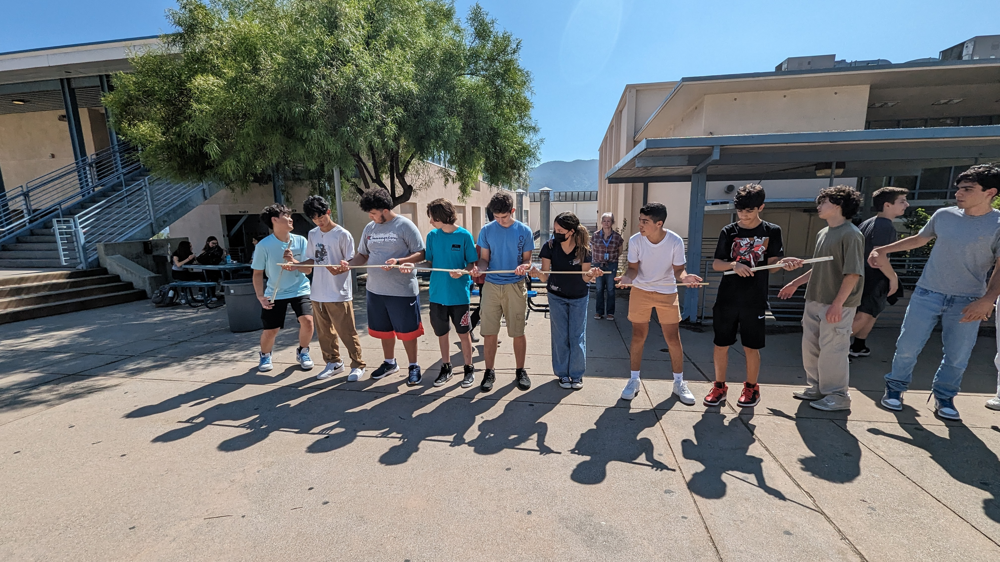
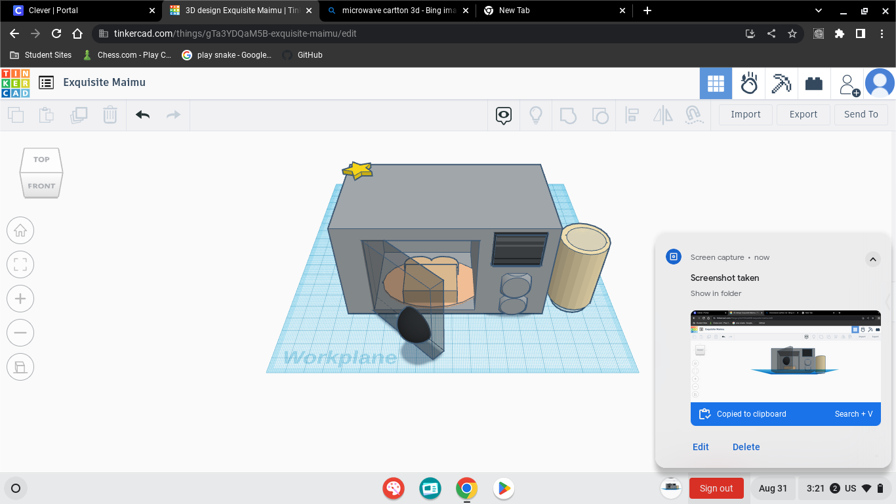

9/1/23 - This is my first journal entry!
This week in enineering, I worked on getting my website up and running. I worked on this for a couple days with classmates and the techer. In additon, the class and I got told that we had an up coimg test, so that day we talked about the what was going to be on the test, what to study for, and what to expect in the test. Also, on wednesday my class and I learned about safty in the class room, and the steps to makeimg a new invention or upgrading one. On thrusady, half of my classmates and I did a chaleng where we had to work as a team to get a marbel into a cup using a cut in-half pipes to trave the marbel into the cup. My team did get the marbel into the cup, so out teacher mad it more of a chaleng and gav us two marbel, we also completed that chaleng, in the end my team won. over this weekend I will problly stay home most of the time, work on hme work, and play with my pets. Now it's friday and I am wirting my first jurnal entry. Overal, I am so far very happy that I got put into this class, it's onky been a the second week of school and I already feel like I have learnd so much.
The marbel chaleng!-->

My Favorite computer game
8/21/23 - This is my second journal entry!
This week in Engineering I learned the importance of safety. Today is 9/1/23 and I took my very first test in engineering, liIerlly my very first test. Also, took a test on what I learnd about stafty. This thrusady was our classes challeng day, for challeng day the class and I made a 3D oven on tinkercard. This is what I made. Lastly, this weekend I will be going to the foot ball game today at 7 at Glendake Highschool, then I will be going to Arizona for my couisns brithday.
